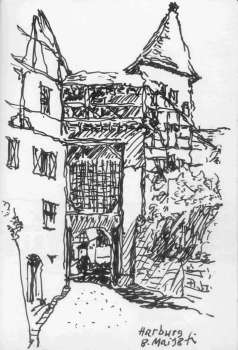

Seiten: Links und Tips für Burgenfreunde/Castles and Forts 1 2 3 4 5 6 7 8 9 Gast im Schloß:10 Mittelalter und andere historische Epochen:11 Schlösser zu verkaufen/Castles for Sale:12 Kunsthandel/Antiquitäten/Antics/Antiques/Fine Art: 13
Konrad FischerNeuschwanstein und Ludwig II
König
Ludwig II. von Bayern - Königswinkel
- info@neuschwanstein-country.net - Walli´s
König Ludwig II-Homepage
Blutenburg in München - Obermenzing
Burgen und Schlösser in Franken
Burgen und Schlösser des Hauses Oettingen-Wallerstein an der Romantischen Straße

Veitshöchheim - Fürstbischöfliches Schloß
Veitshöchheim (Einbau einer Hüllflächentemperierung mit konservatorischer Zielstellung, Planung Architektur- und Ingenieurbüro
Konrad Fischer, 2001)
Schloß Veitshöchheim - in museen.bayern.de
Burgen, Schlösser, Ruinen und Kirchen in der Fränkischen Schweiz
Das Bayreuth der Markgräfin Wilhelmine Altes Schloß Bayreuth - Die Eremitage der Wilhelmine. Chinoiserie und Exotismus ***
Schloß Weißenstein in Pommersfelden - Ein Traum in Barock - Skizzencollage vom dortigen Yehudi Menuhin live music now Benefizkonzert am 9.10.1999 mit Siegfried Jerusalem und jungen Künstlern
Der Katalog der Bayer. Landesausstellung auf Schloß Callenberg/Coburg (mit Abbildungen!): Ein Herzogtum und viele Kronen Die Veste Coburg
Festung Rosenberg in Kronach mit der Fränkischen Galerie <> Kronach Online - mit Info zur Festung
Die Nürnberger Kaiserburg - im Schatzkästlein des Deutschen Reiches, mit Burgmuseum <> Germanisches Nationalmuseum Nürnberg - Das Kaiserburg-Museum <> Worldwide Ferntouristik: WEBCAM Nürnberger Kaiserburg
Schloß Neunhof - Zweigstelle des Germanischen Nationalmuseums Nürnberg
Burg Burgthann - German castle Burgthann - Burg Burgthann II - eine reizvolle Anlage mit sehenswertem Heimatmuseum zwischen Altdorf und Nürnberg (An dieser Restaurierung war ich beteiligt)
Schloß Wonfurt bei Haßfurt (An dieser Restaurierung war ich beteiligt)
Burg Rabenstein in der Fränkischen Schweiz - mit Falknerei! Sehr schön gemachte Seite mit guten Links
Schloß und Museen der Familie Thurn und Taxis in Regensburg
Die weltgrößten Ritterspiele - seit 20 Jahren in Kaltenberg
Burgruine Wolfstein - Ausgrabungsbericht
NZZ Format: Die neue Lust am Mittelalter - Filmtext zur Restaurierung der Burg Sulzberg/Allgäu
Sehenswürdigkeiten im Allgäu - mit Links zu Burgen und Schlössern
Schlösser und Burgen im Allgäu und im Dreiländereck D-A-CH
Alfred Voglers Allgäu Wanderungen - Burgen, Schlösser, Seen, Moore, Kirchen, ...
www.heimatpfleger.dein-allgaeu.de - Eine vorbildliche Heimatpfleger-Seite - Mit Texten zu Burg, Schloß u.a. Denkmalthemen
Weiter: Links und Tips für Burgenfreunde/Castles and Forts 4